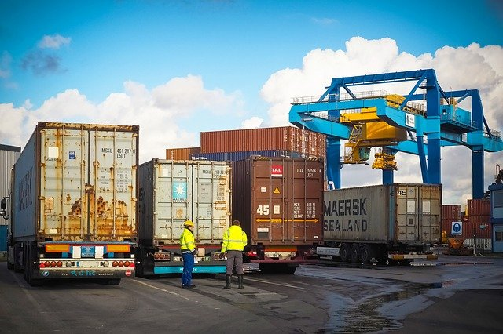
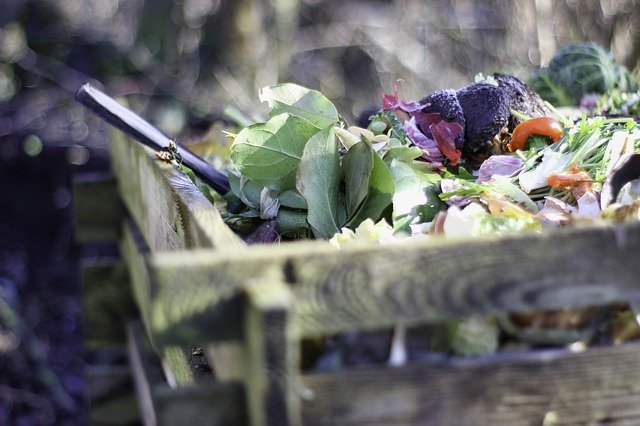
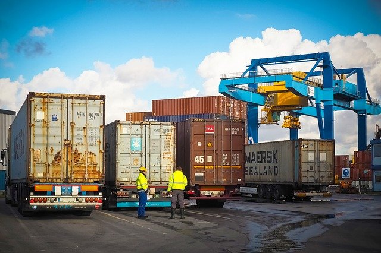
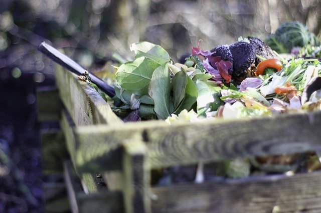

온실가스 31%가 먹거리에서 발생
지금도 기후위기가 매우 심각한데, 온실가스 배출이 꾸준히 증가하고 있습니다. 그런데 FAO에 따르면 우리가 날마다 먹는 먹거리에서 전세계 온실가스의 31%가 발생한다고 합니다. 항목별로 생산이 42%, 가공, 유통, 소비 등이 35%, 토지이용이 23% 입니다. 거기다 음식물 쓰레기로 인한 이산화탄소 배출량이 연간 약 3억톤이나 된다고 합니다. 지구를 살리기 위해 먹거리 분야에서 탄소 배출을 줄이려면 어떻게 해야할까요?더 알아보기
흙의 기능을 강조한 '흙의 날' 제정
김춘진 aT사장이 국회의원 시절이던 2013년, 흙의 가치와 보전의 중요성을 강조하기 위해 '흙의 날 제정에 관한 법률'을 대표 발의했고, 2015년 흙의 날이 법정기념일이 되었습니다.
더 알아보기

저탄소 식생활 캠페인 추진
이러한 흙의 가치를 인정하고 로컬푸드, 음식물 남기지 않기 등에 동참해서 먹거리 분야의 생산-유통-소비 전 단계에서 탄소배출을 감축할 수 있는 '코리아 그린푸드데이' 캠페인을 추진하게 되었습니다. 매월 하루, 지역에서 생산한 친환경 농산물로 만든 음식을 남기지 않고 먹는 캠페인입니다.더 알아보기

'코리아 그린푸드데이' 선포식 개최
저탄소 식생활 문화를 확산하기 위해 전국민을 대상으로 생산자, 소비자, 기업 대표와 함께 '코리아 그린푸드데이' 캠페인 선포식을 개최했습니다. 이 선포식을 시작으로 지자체, 교육청, 공공기관 등과 MOU를 체결하여 범국민 캠페인으로 확산시켰으며, 앞으로는 한국을 넘어 전세계로 확산해나갈 예정입니다.더 알아보기
한국농수산식품유통공사 / follow us Kakaotalk facebook instagram